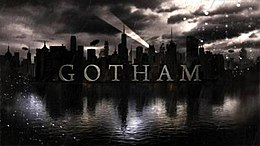

In the first season, James Gordon, a new recruit in the Gotham City Police Department is paired with veteran detective Harvey Bullock to solve the murders of Thomas and Martha Wayne. Gordon meets the Waynes' son Bruce who is now in the care of butler Alfred Pennyworth. In addition, he also encounters gang member Oswald Cobblepot, forensics worker Edward Nygma, street orphans Selina Kyle and Pamela "Ivy" Pepper, assistant district attorney Harvey Dent, and medical doctor Leslie Thompkins. Gordon becomes involved with Gotham's crime families including gangster Fish Mooney and crime lords Carmine Falcone and Salvatore Maroni. In the second season, Gordon deals with a series of events that are being orchestrated by Theo Galavan and his sister Tabitha as part of a plan to take over Gotham as the new Mayor of Gotham City and exacting revenge against the Wayne Family. After Galavan is murdered in his run for mayor, the Gotham City Police Department deals with the actions of Victor Fries. The enigmatic Hugo Strange and his assistant Ethel Peabody conduct a series of bizarre experiments underneath Arkham Asylum in the underground Indian Hill facility that is secretly owned by Wayne Enterprises and overseen by the Court of Owls.
In the third season taking place six months later, Gordon has become a bounty hunter as he works to track down Indian Hill experiments that escaped as well as a revived Fish Mooney. While planning to get Leslie Thompkins back, he also encounters Carmine Falcone's son Mario Calvi as well as hypnotist Jervis Tetch who arrives to look for his sister Alice where she possesses poisonous blood that drives many crazy in various ways. Meanwhile, Ivy is aged up to an adult woman following an encounter with one of Fish Mooney's Indian Hill followers and Jerome Valeska is revived to resume his previous vendetta against the city. Gordon has to deal with the Court of Owls working on behalf of Ra's al Ghul and the League of Shadows, Penguin and Ivy teaming up to form an army, and Edward Nygma embraces his new identity as "The Riddler". 
In the fourth season, Bruce Wayne is a masked vigilante, patrolling Gotham's streets at night, wearing dark clothes and a hooded black balaclava. Cobblepot begins a campaign to dominate the city's underworld by profiting off licensed crime, Nygma finds his mental faculties diminished as a side-effect of having been flash-frozen, Jonathan Crane is seen embracing his role as the Scarecrow, the League of Shadows begin their next plot involving an ancient embalming knife, and Butch Gilzean seemingly returns from the dead as Solomon Grundy.